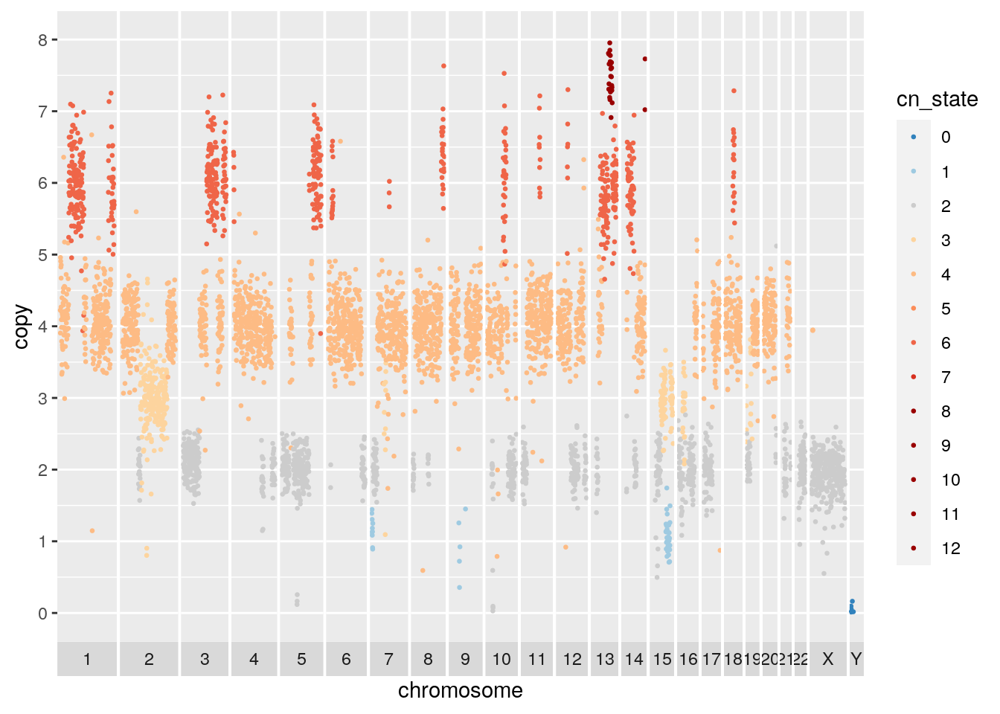
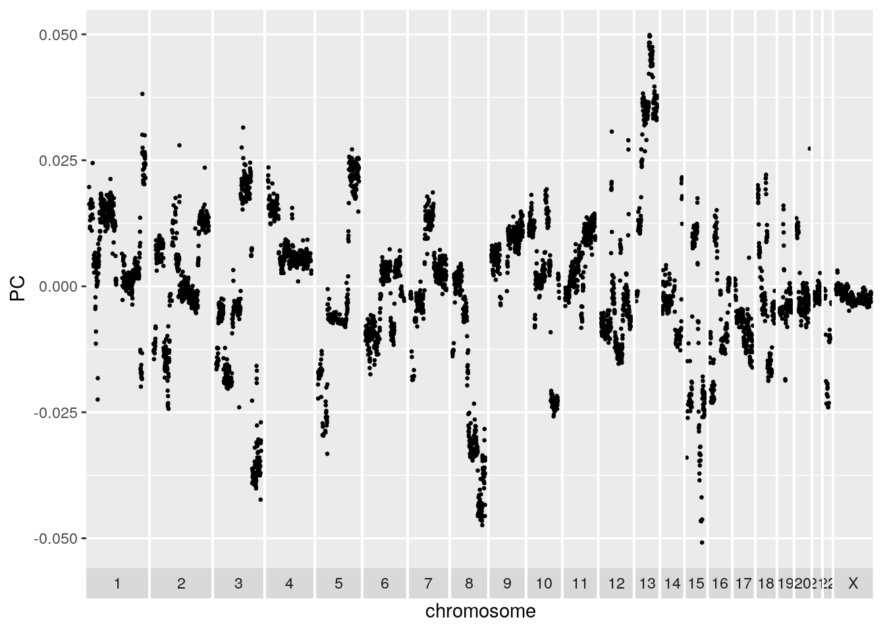
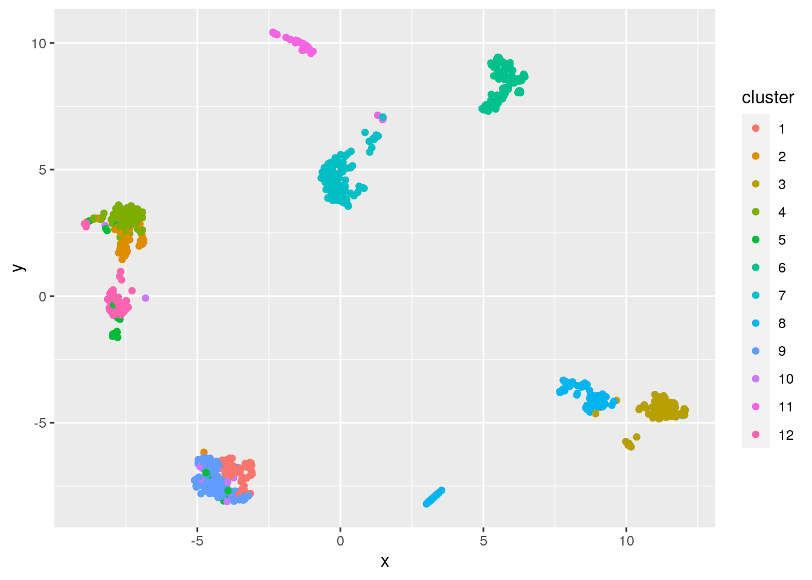
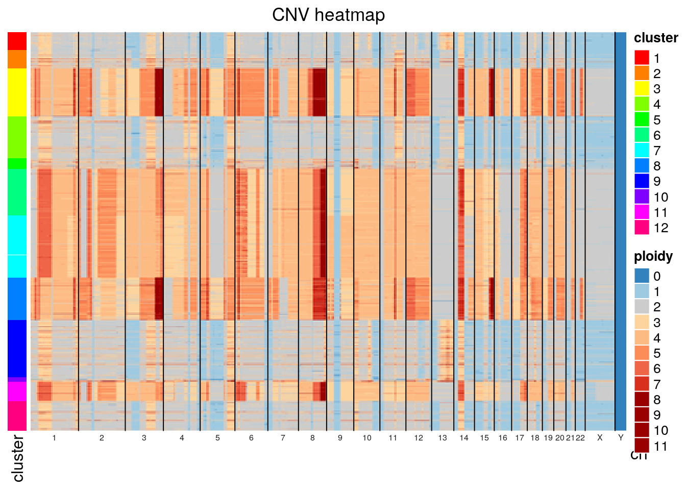
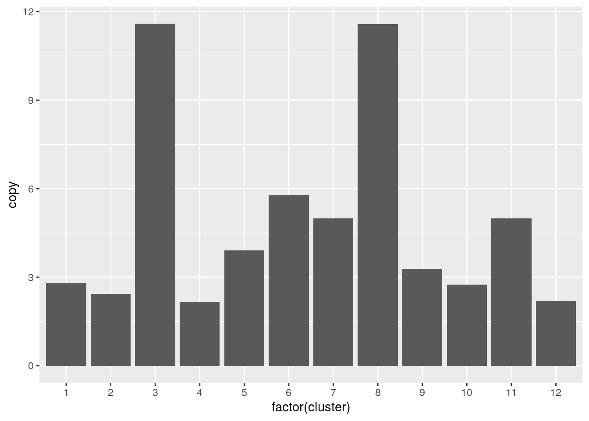

Chapter 2 DLP Sequencing of an Ovarian Cancer Cell Line
2.1 Introduction
In this tutorial we will analyze the OV2295 cell line DLP data from the paper “Clonal Decomposition and DNA Replication States Defined by Scaled Single-Cell Genome Sequencing”, Laks et al. (2019) https://doi.org/10.1016/j.cell.2019.10.026. The OV2295 cell lines were generated from a primary, metastasis and relapse specimens obtained from a patient with high grade serous ovarian cancer (see Létourneau et al. (2012), https://doi.org/10.1186/1471-2407-12-379). The cell lines have a high degree of genomic instability, and significant genomic heterogeneity including with respect to large chromosomal changes. The data from the Laks et al. paper is deposited in zenodo (https://doi.org/10.5281/zenodo.3445364).
2.2 Load the required packages
This tutorial will rely heavily on the tidyverse packages including ggplot2. Heatmap plotting will use ComplexHeatmap and manipulation of genomic segment data will be done with GenomicRanges.
2.3 Read and QC the copy number data
This data is available from zenodo and can be downloaded with:
wget "https://zenodo.org/record/3445364/files/ov2295_cell_cn.csv.gz"
wget "https://zenodo.org/record/3445364/files/ov2295_cell_metrics.csv.gz"
The data was analyzed using the DLP single_cell_pipeline: https://github.com/shahcompbio/single_cell_pipeline.
We will first read the metrics data, assess the quality of the cells and filter where necessary. The metrics file provided by the many columns but we will focus on quality and total_reads for filtering. Quality is calculated using a classifier trained on manually curated cell quality calls and uses many of the other metrics as features.
metrics <- vroom("ov2295_cell_metrics.csv.gz")
DT::datatable(
head(metrics),
filter = 'top',
options = list(
pageLength=50,
scrollX='400px',
autoWidth=TRUE))Plot a scatterplot of quality by total reads with marginals on the axes. The cloud of cells with significant read count and quality less than 0.75 are cells for which we cannot effectively predict copy number. These cells could either be cycling, or for which the genomic DNA degraded significantly prior to sequencing, or for which tagmentation failed.
The plots in this notebook will be using ggplot extensively. I recommend the r4ds tutorials (https://r4ds.had.co.nz/data-visualisation.html) and the ggplot cheat sheet (https://github.com/rstudio/cheatsheets/blob/master/data-visualization-2.1.pdf) for further reference.
p <- metrics %>%
ggplot(mapping = aes(x=quality, y=total_reads)) +
geom_point() +
theme(legend.position = "left")
ggMarginal(p, type="histogram")Filter reads based on a quality threshold of 0.85 and a total read count threshold of 500k reads. Also filter control cells based on the experimental_condition and sample_id columns.
metrics <- metrics %>% filter(
quality >= 0.85,
total_reads > 500000,
!(experimental_condition %in% c("GM", "gDNA")),
sample_id %in% c("SA1090", "SA921", "SA922"))Read in the copy number data. Using vroom::vroom will significantly speed up data loading and using factors for chr and cell_id and ignoring irrelevant columns will reduce the memory footprint.
cn <- vroom(
'ov2295_cell_cn.csv.gz',
col_types = cols(
chr = col_factor(NULL),
cell_id = col_factor(NULL)
),
col_select = c(
chr,
start,
end,
reads,
copy,
state,
cell_id
)
)Subset copy number data by the filtered cell ids in the metrics table.
cn <- cn %>% inner_join(metrics[, c("cell_id", "sample_id")], by = "cell_id")
knitr::kable(head(cn), booktabs = TRUE)| chr | start | end | reads | copy | state | cell_id | sample_id |
|---|---|---|---|---|---|---|---|
| 1 | 1 | 500000 | 22 | NA | 5 | SA922-A90554B-R28-C09 | SA922 |
| 1 | 500001 | 1000000 | 609 | NA | 5 | SA922-A90554B-R28-C09 | SA922 |
| 1 | 1000001 | 1500000 | 752 | 4.574060 | 5 | SA922-A90554B-R28-C09 | SA922 |
| 1 | 1500001 | 2000000 | 672 | 3.465685 | 5 | SA922-A90554B-R28-C09 | SA922 |
| 1 | 2000001 | 2500000 | 931 | 5.571458 | 5 | SA922-A90554B-R28-C09 | SA922 |
| 1 | 2500001 | 3000000 | 794 | NA | 5 | SA922-A90554B-R28-C09 | SA922 |
2.4 Copy number exploration
We will plot cells using a scatter plot of normalized binned read count data. The data has been processed through HMMCopy analysis as part of the DLP single cell pipeline. The state column contains the prediction of integer copy number state for each cell. The copy column is raw read count normalized for ploidy, gc, and mappability. We will plot copy on the y axis and color by state, and wrap the plotting code in a function for use below.
plot_profile <- function(cn) {
cn.colors <- c(rev(brewer.pal(n = 3, "Blues"))[1:2], "#CCCCCC", tail(brewer.pal(n = 8, "OrRd"), 6))
cn.colors <- c(cn.colors, cn.colors[c(9, 9, 9, 9)])
names(cn.colors) <- 0:12
cn %>%
mutate(cn_state = factor(state, names(cn.colors))) %>%
mutate(chr = factor(chr, levels = c(1:22, "X", "Y"))) %>%
ggplot() +
geom_point(mapping = aes(x = start, y = copy, colour = cn_state), size = 0.5) +
facet_grid(~chr, scales = "free_x", space="free_x", switch = "x") +
theme(panel.spacing = unit(0.05, "cm")) +
scale_x_continuous(breaks = c()) +
scale_color_manual(values = cn.colors, labels = names(cn.colors), drop = FALSE) +
scale_y_continuous(breaks = seq(0, 8, by = 1), limit = c(0, 8)) +
xlab('chromosome')
}
plot_cell <- function(cn, plot_cell_id) {
filter(cn, cell_id == plot_cell_id) %>% plot_profile()
}The first cell we will plot is a near diploid cell with some amplified regions and many LOH regions including chromosome 17. The chromosome 17 LOH overlaps with a deliterious TP53 mutation, as is typical of high grade serous ovarian cancers.
## Warning: Removed 740 rows containing missing values (geom_point).A second cell from the same cell line appears to be baseline tetraploid. Many of the amplified or deleted regions overlap with those of the diploid baseline cell. Copy 3 regions on chromosome 2 and 15 support the tetraploid solution.
## Warning: Removed 762 rows containing missing values (geom_point).
It will be useful to plot all cells together in a heatmap for a high level look at the heterogeneity. Here we rely on the very useful ComplexHeatmap package. The plot takes a GenomicRanges object with columns as cells and rows as regions. A nice tutorial on GenomicRanges can be found here. The plot will use hierarchical clustering to order the cells and provide a summary of the similarity between groups of cells.
plot_heatmap <- function(gr, dist_method = "euclidean"){
#' plot a heatmap with chromosome boundaries
#' the order of the rows can be customized here
#' its a simple distance based clustering
#'
#' Adapted from code published by Velazquez-Villarreal et al. (2020):
#' https://www.nature.com/articles/s42003-020-1044-8
#'
#' Uses the very useful ComplexHeatmap package:
#' https://jokergoo.github.io/ComplexHeatmap-reference/book/
gr <- GenomeInfoDb::sortSeqlevels(gr)
gr <- sort(gr)
mat <- as.matrix(GenomicRanges::mcols(gr))
mat <- t(mat)
hr <- hclust(get_dist(mat, method = dist_method), method = "average")
hr = as.dendrogram(hr)
# chromosome boundaries and midpoints for annotation
chr_ids = GenomicRanges::seqnames(gr)@values
chr_lengths = GenomicRanges::seqnames(gr)@lengths
chr_props = chr_lengths / length(gr)
mids = cumsum(chr_props) - (chr_props / 2)
boundaries = cumsum(chr_props)
boundaries = boundaries[1:length(boundaries)-1]
abline_x = rep(boundaries, each=2)
abline_y <- rep(c(0,1), times=length(boundaries))
abline_ids <- rep(1:length(boundaries),each=2)
#annotation to label chromosomes
ha_column = ComplexHeatmap::HeatmapAnnotation(cn = function(index) {
grid.text(chr_ids,x=mids,y=1,just = c("center", "top"),gp=gpar(col="#202020",fontsize=6))
})
# the main heatmap
cn.colors <- c(rev(brewer.pal(n = 3, "Blues"))[1:2], "#CCCCCC", tail(brewer.pal(n = 8, "OrRd"), 6))
cn.colors <- c(cn.colors, cn.colors[c(9, 9, 9, 9)])
names(cn.colors) <- 0:12
hm <- ComplexHeatmap::Heatmap(
matrix = mat,
name = "ploidy",
col = cn.colors,
cluster_rows = hr,
cluster_columns = FALSE,
show_row_names = FALSE,
bottom_annotation = ha_column,
column_title = "CNV heatmap",
use_raster = TRUE,
)
ComplexHeatmap::draw(hm, row_dend_side = "left")
ComplexHeatmap::decorate_heatmap_body("ploidy", {
grid.polyline(
x = abline_x,
y = abline_y,
id = abline_ids,
gp = gpar(lty = 1, lwd = 1))
})
}Plotting SA1090 (the primary sample), we can see that there are two major groups, a baseline diploid and a baseline tetraploid group. Both groups harbour additional heterogeneity. Looking closely, it appears that many of the patterns that distinguish populations within the diploid group are also found in the tetraploid group.
gr <- cn %>%
filter(sample_id == "SA1090") %>%
dplyr::select(chr, start, end, state, cell_id) %>%
pivot_wider(names_from = cell_id, values_from = state) %>%
GenomicRanges::makeGRangesFromDataFrame(keep.extra.columns=TRUE,ignore.strand=TRUE)
plot_heatmap(gr)
The default distance method for generating the hierarchical clustering was eucldean, which will naturally result in large distances between diploid and tetraploid cells. Alternative distance methods can be specified, see the get_dist function from factoextras. If we use pearson correlation as the distance method, we see significant mixing of the diploid and tetraploid populations indicating that tetraploidization is occuring independently and sporadically throughout the population.
If we plot total_reads by mean_copy (average ploidy) there appears to be a relationship, likely due to the fact that tetraploid cells will have twice the DNA available and take up more sequencing realestate. Classifying diploid and tetraploid, the difference in mean total_reads is highly significant, further evidence the tetraploid cells are truly tetraploid. Some cells classified as diploid may in fact be tetraploid with a perfect doubling of all chromosomes though this would be difficult to determine without orthogonal experiments. Note that we havent ruled out doublets with certainty.
metrics %>%
filter(sample_id == "SA1090") %>%
ggplot(aes(x=mean_copy, y=total_reads)) + geom_point() +
geom_smooth(method='lm', formula= y~x)
metrics %>%
filter(sample_id == "SA1090") %>%
mutate(is_polyploid = mean_copy > 2.5) %>%
ggplot(aes(x=is_polyploid, y=total_reads)) + geom_boxplot() +
stat_compare_means(label.x = 1.3)
2.5 Clustering
In order to further understand the population structure we can cluster the cells by their copy number profiles. It is worth noting that for some datasets, clustering is inappropriate. If the population of cells is continuously evolving and accruing neutral copy number changes, the cells will lie on a continuum of copy number change. Any maximal set of related cells could be considered a ‘cluster’ if a copy number change exists specific to that set of cells. In such a case phylogenetic representation is more appropriate. However, in many real datasets sets of cells will cluster due to either selection having favoured the expansion of some cell populations and the extinction of others.
We will first cluster the cells using k-means. Independent segmentation of each cell using HMMCopy can produce small differences in segment boundaries that may affect clustering. We will thus cluster based on the raw copy number (‘copy’ column) instead of the HMMCopy state. Start by creating a matrix of raw copy number values, filtering bins with NaNs in any cell and scaling the data to allow clustering of cells with dissimilar ploidy.
gr <- cn %>%
dplyr::select(chr, start, end, copy, cell_id) %>%
pivot_wider(names_from = cell_id, values_from = copy) %>%
GenomicRanges::makeGRangesFromDataFrame(keep.extra.columns=TRUE,ignore.strand=TRUE)
# Remove bins with any nan across any cell
gr <- gr[complete.cases(GenomicRanges::mcols(gr))]
# Create matrix, remove bins that are nan across any cells
mat <- as.matrix(GenomicRanges::mcols(gr))
# Optionally normalize the copy number, this will group cells regardless of ploidy
mat <- scale(mat)
mat <- t(mat)We will then use PCA to transform the data to a reduced dimensionality representation. In bin level copy number data, many of the bins will be highly correlated especially with neighboring bins subject to the same copy number change. PCA will effectively compress multiple correlated bins into a single dimension. Working with the top PCA components will be desirable because it decreases the computational burden of downstream computation (ie clustering) and reduces noise by averaging across multiple bins. PCA can be run using the prcomp function:
It can be informative to plot the PCA loadings of the top components. The loadings for a given component represent how much each bin contributes to that component. Large positive or negative values indicate a strong positive or negative correlation of the bin with the component respectively. Values close to 0 indicate the bin is uncorrelated with the component. The PCA loading plot can be helpful in identifying problematic noisy bins. These bins will show up as isolated spikes in the PCA loading plot. The first PCA plotted below looks unproblematic. Try setting the value of a bin to 1000 for a subset of cells and redoing the PCA to see the effect.
pc = "PC1"
gr.pca <- granges(gr)
GenomicRanges::mcols(gr.pca) <- list(PC=mat.pca$rotation[, pc])
GenomicRanges::as.data.frame(gr.pca) %>%
tibble() %>%
dplyr::rename(chr=seqnames) %>%
ggplot() +
geom_point(mapping = aes(x = start, y = PC), size = 0.5) +
facet_grid(~chr, scales = "free_x", space="free_x", switch = "x") +
theme(panel.spacing = unit(0.05, "cm")) +
scale_x_continuous(breaks = c()) +
xlab('chromosome')
Now run k-means on the first 50 PCs. Use 12 cluster centers and 100 restarts and set a seed for consistency.
set.seed(42)
clust.kmeans <- kmeans(mat.pca$x[, 1:50], centers=12, nstart=100)
clust <- clust.kmeans$clusterUMAP is a non-linear dimensionality reduction technique favoured for its ability to preserve much of the structure of the data in a 2-D plot. We can use UMAP to visualize the clustering.
mat.umap <- umap(mat)
mat.umap.tbl <- tibble(x=mat.umap$layout[,1], y=mat.umap$layout[,2], cluster=factor(clust))
ggplot(mat.umap.tbl) + geom_point(aes(x=x, y=y, color=cluster))
We can also assess the clustering using the silhouette method. Briefly, the silhouette width statistic is calculated based on the mean distance of a datapoint to every other datapoint in the same cluster, and the mean distance to datapoints in the next closest cluster. A silhouette width less than 0 could indicate the cell may be better assigned to a different cluster, the cell is an outlier, or the data are not spherically distributed around cluster centers.
sil.approx <- approxSilhouette(mat, clusters=clust)
sil.data <- as.data.frame(sil.approx)
sil.data$closest <- factor(ifelse(sil.data$width > 0, clust, sil.data$other))
sil.data$cluster <- factor(clust)
ggplot(sil.data, aes(x=cluster, y=width, colour=closest)) +
ggbeeswarm::geom_quasirandom(method="smiley")
We used k=12 cluster centers somewhat arbitrarily. Many strategies exist for selecting an appropriate value for k. For instance, we could use the gap statistic to select an optimal k as shown below. The optimal number of clusters suggested by this method may be less than expected reflecting the issues with clustering, especially k-means clustering, on this type of data. Generally speaking, differences between sub-populations will vary widely in scale with some populations well separated by large copy number changes and other derivative populations differing only by a few changes.
## Clustering k = 1,2,..., K.max (= 30): .. done
## Bootstrapping, b = 1,2,..., B (= 100) [one "." per sample]:
## .................................................. 50
## .................................................. 100best.k <- maxSE(gaps$Tab[,"gap"], gaps$Tab[,"SE.sim"])
as_tibble(gaps$Tab) %>% mutate(k=factor(1:30)) %>%
ggplot() +
geom_point(aes(x=k, y=gap)) +
geom_vline(xintercept=best.k, col="red", lwd=0.5, lty=2) +
xlab("Number of clusters") +
ylab("Gap statistic")
Alternative clustering approaches are possible, see this excellent scRNA tutorial for ideas. For instance, a graph based clustering approach could work better for clustering copy number data in some cases, as graph based methods will not favour spherical clusters.
In order to visualize the cluster copy number, lets modify our heatmap plotting function to take in a clustering, order the rows by each cell’s cluster label, and annotate the clusters on the left side of the heatmap.
plot_cluster_heatmap <- function(gr, clust){
#' plot a heatmap with chromosome boundaries
#' the order of the rows can be customized here
#' its a simple distance based clustering
#'
#' Adapted from code published by Velazquez-Villarreal et al. (2020):
#' https://www.nature.com/articles/s42003-020-1044-8
#'
#' Uses the very useful ComplexHeatmap package:
#' https://jokergoo.github.io/ComplexHeatmap-reference/book/
gr <- GenomeInfoDb::sortSeqlevels(gr)
gr <- sort(gr)
sorted_clust = sort(clust)
mat <- as.matrix(GenomicRanges::mcols(gr))
mat <- t(mat)
mat <- mat[names(sorted_clust),]
# chromosome boundaries and midpoints for annotation
chr_ids = GenomicRanges::seqnames(gr)@values
chr_lengths = GenomicRanges::seqnames(gr)@lengths
chr_props = chr_lengths / length(gr)
mids = cumsum(chr_props) - (chr_props / 2)
boundaries = cumsum(chr_props)
boundaries = boundaries[1:length(boundaries)-1]
abline_x = rep(boundaries, each=2)
abline_y <- rep(c(0,1), times=length(boundaries))
abline_ids <- rep(1:length(boundaries),each=2)
# annotation to label chromosomes
ha_column = ComplexHeatmap::HeatmapAnnotation(cn = function(index) {
grid.text(chr_ids,x=mids,y=1,just = c("center", "top"),gp=gpar(col="#202020",fontsize=6))
})
# cluster annotation
cluster_colors = rainbow(length(unique(sorted_clust)))
names(cluster_colors) = unique(sorted_clust)
ha_row = ComplexHeatmap::rowAnnotation(cluster = factor(sorted_clust), col = list(cluster = cluster_colors))
# the main heatmap
cn.colors <- c(rev(brewer.pal(n = 3, "Blues"))[1:2], "#CCCCCC", tail(brewer.pal(n = 8, "OrRd"), 6))
cn.colors <- c(cn.colors, cn.colors[c(9, 9, 9, 9)])
names(cn.colors) <- 0:12
hm = ComplexHeatmap::Heatmap(
matrix = mat,
name = "ploidy",
col = cn.colors,
cluster_rows = FALSE,
cluster_columns = FALSE,
show_row_names = FALSE,
bottom_annotation = ha_column,
left_annotation = ha_row,
column_title = "CNV heatmap",
use_raster = TRUE,
)
ComplexHeatmap::draw(hm)
ComplexHeatmap::decorate_heatmap_body("ploidy", {
grid.polyline(
x = abline_x,
y = abline_y,
id = abline_ids,
gp = gpar(lty = 1, lwd = 1))
})
}gr <- cn %>%
dplyr::select(chr, start, end, state, cell_id) %>%
pivot_wider(names_from = cell_id, values_from = state) %>%
GenomicRanges::makeGRangesFromDataFrame(keep.extra.columns=TRUE,ignore.strand=TRUE)
plot_cluster_heatmap(gr, clust)
We can also merge cell copy number data by cluster to show aggregate cluster level copy number.
clust.df <- enframe(clust.kmeans$cluster) %>%
dplyr::rename(cell_id = name, cluster = value)
clust.sizes <- enframe(table(clust.df$cluster)) %>%
dplyr::rename(cell_id = name, size = value) %>%
filter(size >= 10)
cn_clust <- cn %>%
inner_join(clust.df) %>%
group_by(chr, start, end, cluster) %>%
summarize(copy = mean(copy), state = median(state))## Joining, by = "cell_id"## `summarise()` has grouped output by 'chr', 'start', 'end'. You can override using the `.groups` argument.## Warning: Removed 806 rows containing missing values (geom_point).## Warning: Removed 959 rows containing missing values (geom_point).
## Warning: Removed 915 rows containing missing values (geom_point).There appears to be a deletion on chromosome 5. Navigate here to see why: http://genome.ucsc.edu/cgi-bin/hgTracks?db=hg19&lastVirtModeType=default&lastVirtModeExtraState=&virtModeType=default&virtMode=0&nonVirtPosition=&position=chr5%3A67500000%2D72000002&hgsid=1117136619_dGtW3EEOeJAIG6cYbSGFZwGwyLzb
subset.gr <- cn_clust %>% filter(copy < 0.2, chr != "Y") %>% makeGRangesFromDataFrame()
knitr::kable(subset.gr, booktabs = TRUE)| seqnames | start | end | width | strand |
|---|---|---|---|---|
| 5 | 69000001 | 69500000 | 5e+05 | * |
| 5 | 69000001 | 69500000 | 5e+05 | * |
| 5 | 69000001 | 69500000 | 5e+05 | * |
| 5 | 69000001 | 69500000 | 5e+05 | * |
| 5 | 69000001 | 69500000 | 5e+05 | * |
| 5 | 69000001 | 69500000 | 5e+05 | * |
| 5 | 69500001 | 70000000 | 5e+05 | * |
| 5 | 69500001 | 70000000 | 5e+05 | * |
| 5 | 69500001 | 70000000 | 5e+05 | * |
| 5 | 69500001 | 70000000 | 5e+05 | * |
| 5 | 69500001 | 70000000 | 5e+05 | * |
| 5 | 69500001 | 70000000 | 5e+05 | * |
| 5 | 69500001 | 70000000 | 5e+05 | * |
| 5 | 69500001 | 70000000 | 5e+05 | * |
| 5 | 70000001 | 70500000 | 5e+05 | * |
| 5 | 70000001 | 70500000 | 5e+05 | * |
| 5 | 70000001 | 70500000 | 5e+05 | * |
| 5 | 70000001 | 70500000 | 5e+05 | * |
2.6 Subclonal Gene Amplification
Finally, lets look at the gene content of some of the high level amplifications. First read in a list of known oncogenic amplified genes from the cancer gene census. Read hg19 genes from TxDb.Hsapiens.UCSC.hg19.knownGene and be careful to rename chromosomes, ie “chr9” -> “9”. Add gene symbols from org.Hs.egSYMBOL.
cencus.amps <- read_csv('./Census_ampThu\ Apr\ 16\ 15_35_36\ 2020.csv') %>%
dplyr::rename(symbol = `Gene Symbol`)##
## ── Column specification ────────────────────────────────────────────────────────────────────────────────────────────────────
## cols(
## `Gene Symbol` = col_character(),
## Name = col_character(),
## `Entrez GeneId` = col_double(),
## `Genome Location` = col_character(),
## Tier = col_double(),
## `Tumour Types(Somatic)` = col_character(),
## Synonyms = col_character()
## )# read human genes, normalize chromosome names
human.genes <- genes(TxDb.Hsapiens.UCSC.hg19.knownGene)## 403 genes were dropped because they have exons located on both strands of the same reference sequence or on
## more than one reference sequence, so cannot be represented by a single genomic range.
## Use 'single.strand.genes.only=FALSE' to get all the genes in a GRangesList object, or use suppressMessages()
## to suppress this message.human.genes <- renameSeqlevels(human.genes, sub("chr", "", seqlevels(human.genes)))
# add gene symbol from org.Hs.egSYMBOL
GenomicRanges::mcols(human.genes) <- tibble(gene_id=human.genes$gene_id) %>%
left_join(tibble(as.data.frame(org.Hs.egSYMBOL)))## Joining, by = "gene_id"# subset by cancer gene cencus amps
cencus.amps.genes <- human.genes[(elementMetadata(human.genes)[,'symbol'] %in% cencus.amps$symbol)]Filter copy number for high level events, then subset by overlap with gene regions. The SOX2 gene is amplified.
subset.gr <- cn_clust %>% filter(copy > 10) %>% makeGRangesFromDataFrame(keep.extra.columns=TRUE,ignore.strand=TRUE)
subset.genes <- subsetByOverlaps(cencus.amps.genes, subset.gr)
knitr::kable(subset.genes, booktabs = TRUE)| seqnames | start | end | width | strand | gene_id | symbol |
|---|---|---|---|---|---|---|
| 3 | 181429712 | 181432223 | 2512 | + | 6657 | SOX2 |
Overlapping the SOX2 region with all cluster copy number we find that SOX2 is subclonally amplified.
all.gr <- cn_clust %>% makeGRangesFromDataFrame(keep.extra.columns=TRUE,ignore.strand=TRUE)
subsetByOverlaps(all.gr, subset.genes) %>%
as_tibble() %>%
ggplot() + geom_col(aes(x=factor(cluster), y=copy))